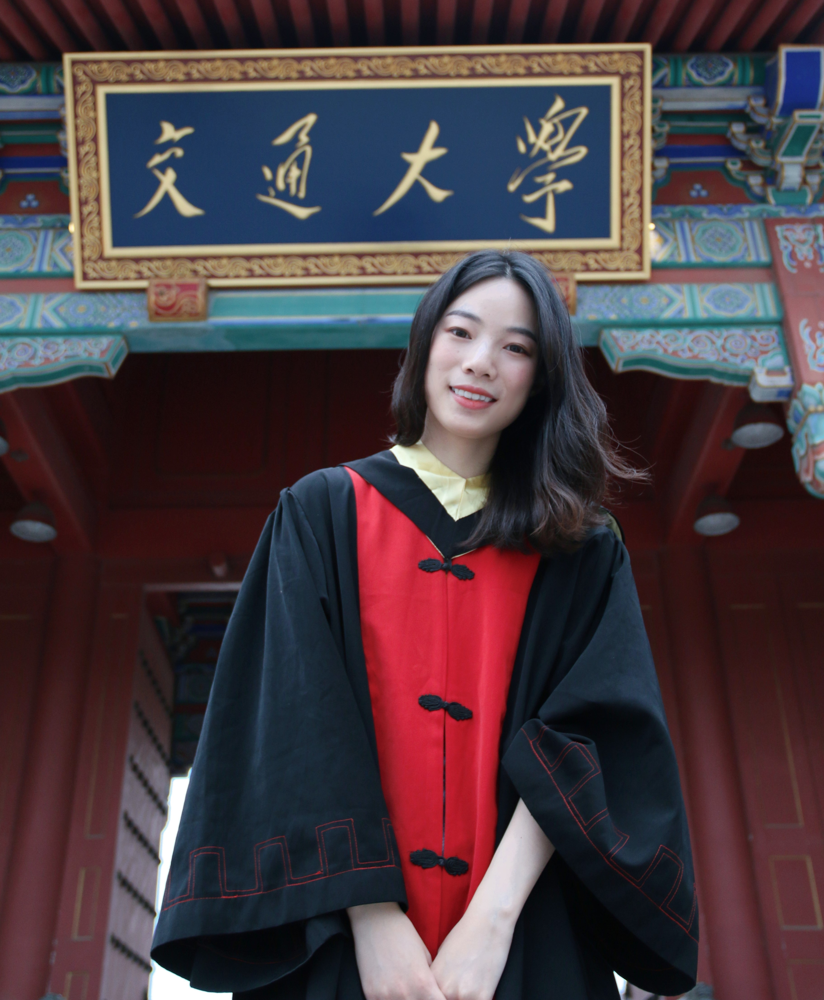

|

|
Tong Lu
I'm currently a final-year master student at Shanghai Jiao Tong University. I am fortunate to be advised by Prof Xinguo Ming. Previously I obtained my Bachelor's degree in Industrial Engineering and Management, Shanghai Jiao Tong University.
My research interests mainly lie in the optimization of transportation system. I would like to see how operations research can be properly applied and combined with other methods to solve the problems in the transportation system.
I am actively searching for a Ph.D. position. You can view my CV here.
|
|
Contact
Email : Emma_lu at sjtu dot edu dot cn
|
|
Education
Shanghai Jiao Tong University, China
Master in Industrial Engineering and Management
2019 to 2022(expected)
Shanghai Jiao Tong University, China
B.S. in Industrial Engineering and Management
2015 to 2019
|
Publications
Window Based Genetic Algorithm for Multi-AGVs Conflict-free Path Planning in Automated Container Terminals
Tong Lu, Zhao-Hui Sun*, Siqi Qiu, Xinguo Ming
oral paper, IEEE International Conference on Industrial Engineering and Engineering Management (IEEM 2021)
AGV-based Vehicle Transportation in Automated Container Terminals: A Survey
Zhao-Hui Sun, Jiapeng You, Siqi Qiu, Edmond Q. Wu, Pengwen Xiong, Aiguo Song, Hanzhong Zhang, Tong Lu
under review, IEEE Transactions on Intelligent Transportation Systems
A Bi-level Hybrid Heuristic Algorithm for Integrated Scheduling and Conflict-free Routing Problem for AGVs in Automated Container Terminal
Tong Lu, Zhao-Hui Sun, Xinguo Ming
working paper, IEEE Transactions on Intelligent Transportation Systems
|
|
Research Projects
Integrated scheduling and conflict-free routing for AGVs
Supervised by Prof. Xinguo Ming
Jul. 2021 to present
Considered the AGV routing and scheduling problem as a whole and formulated both problems in one mathematical model. Designed a bi-level hybrid heuristic algorithm to achieve efficient AGV scheduling and conflict-free routing. This project is funded by Shanghai Zhenhua Heavy Industries (ZPMC).
Confilct-free routing for AGVs in automated container terminals (ACT)
Supervised by Prof. Xinguo Ming
Oct. 2020 to Jun. 2021
Proposed a mathematical model of the conflict-free routing problem and developed a time-window-based genetic algorithm which can find conflict-free paths for multi-AGVs in ACT and achieve a shorter makespan. This project is funded by Shanghai Zhenhua Heavy Industries (ZPMC)
Production scheduling for flexible job shop with uncertainty
Supervised by Prof. Ran Liu
Mar. 2019 to Jun. 2019
Constructed the mathematical model of the flexible job shop problem (FJSP) and designed an ant colony algorithm to figure out the production schedule considering the uncertainty that the machine may break down.
Research on the influence of manufacturing station load factors on ergonomic evaluation results based on motion capture system
Supervised by Prof. Dongmei Wang
Dec. 2018 to Jun. 2019
Used the cubic spline interpolation method to process the data collected in experiments, then designed an automatic evaluation method for ergonomics considering the influence of load factors to optimize the old evaluation system.
Optimization of operating rooming scheduling and nurse scheduling
Supervised by Prof. Zhibin Jiang and Prof. Na Geng
Sept. 2017 to Dec. 2017
Constructed the multi-objective optimization model of the nurse scheduling problem to reduce overtime for nurses. Used LINGO to solve the linear programming and tested the model with real data from the hospital.
|
|
Teaching
ME6102: Mechanical Design Reliability Analysis, Teaching Assistant, 2021 Spring
ME391: MATLAB with application in engineering, Teaching Assistant, 2021 Spring
|
|
Selected Awards
Weichai Power Scholarship of Shanghai Jiao Tong University(1%), 2021
Cummins Dr.Lyn Scholarship of Shanghai Jiao Tong University(1%), 2020
The A level Scholarship of Shanghai Jiao Tong University(5%), 2018
The second prize in the final of the “12th Dongfeng Nissan Cup --Tsinghua IE Liangjian National Industrial Engineering Application Case Competition”(5%), 2018
The B level Scholarship of Shanghai Jiao Tong University(10%), 2017
|
|